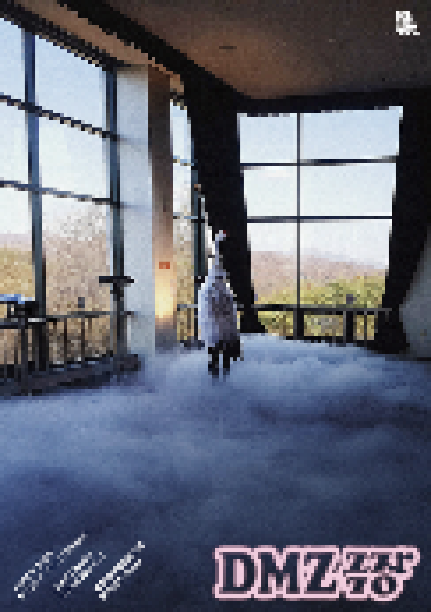

> title
DMZ 극장
> content
* 퍼포먼스: 8월 25일 이후 전시 기간 중 매주 수요일, 토요일 16:00~17:00
※ 퍼포먼스 일정은 코로나19 상황에 따라 변동될 수 있습니다. 자세한 내용은 홈페이지(사전 관람예약)을
참고해주십시오.
(단 2021년 8월에는 사회적 거리두기 4단계에 따른 《DMZ 극장》 퍼포먼스 사전 관람예약 미운영)
《DMZ 극장》은 DMZ 주변을 따라 지어진 13개의 전망대를 하나의 극장으로 바라보고 여기에 담긴 서사를 전시와 퍼포먼스로 풀어낸 다원예술 프로젝트이다. 작가 정연두와 연출가
수르야가 참여하는 이번 프로젝트는
2017년부터 DMZ 내 13개 전망대를 계절별로 50여 차례 방문하며 촬영한 사진 작품을 바탕으로, 군인들의 인터뷰, 전망대 주변 지명에 얽힌 설화, 전쟁과 분단에 관한 일화들을 수집하고
재구성하여 전시와
퍼포먼스로 확장한 것이다. 《DMZ 극장》을 구성하는 <승리극장>, <도라극장>, <오두산 통일극장> 등 각 작품의 제목은 전망대가 품고 있는 복합적인 이야기를 좇아 13개 전망대의 각각의
이름을 따라 지어졌다.
DMZ는 군사분계선을 중심으로 남북으로 각 2km에 달하는 비무장지대(Demilitarized Zone)로 우리의 아픈 근대사를 증거하는 '장소'이지만,
한편으로는 물리적 소통이 부재하는
‘비장소’이기도 하다. 《DMZ 극장》은 분단과 전쟁을 둘러싼 이데올로기적 맥락과 생태적 보고(寶庫)로서의 환경적 맥락 등 DMZ가 가진 기존의 서사를 전시, 퍼포먼스,
워크숍을 통해 유연하게
확장하고자 하는 다원적이고 수행적인 대안 예술 실천이라 할 수 있다.
《DMZ 극장》은 국가나 민족, 이념을 중심으로 작동하는 거시사보다는 개인의 역사, 감정, 설화, 신화를 중심으로 그동안 드러나지 않은 풍부하고 역동적인
미시사를 건져 올림으로써, DMZ를
현실과 상상이 교차하는 새로운 문화적 생성지대로 바라본다. DMZ의 친숙한 이야기와 이미지에 낯설게 접근하는 이번 프로젝트는 오랜 기간 우리를 지배해온 트라우마에서 해방될
수 있는 하나의 통로를
마련해줄 것으로 기대된다.
